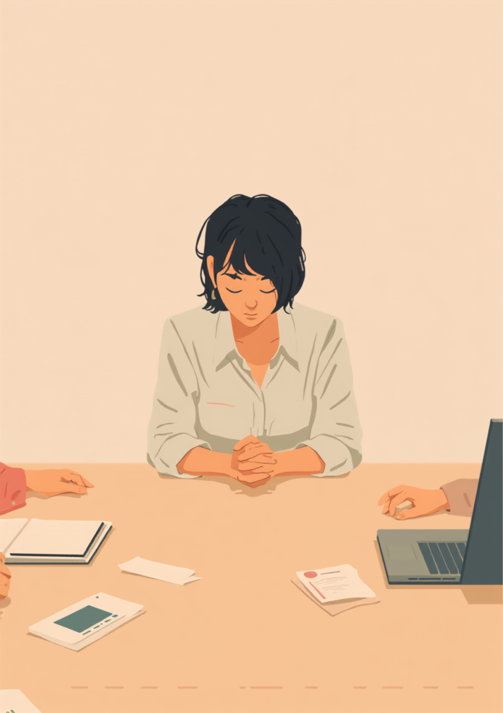
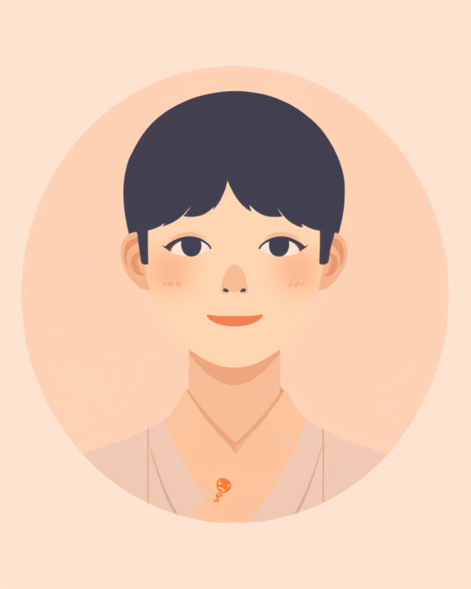

チック症・トゥレット症候群は、体の一部が突然動いたり（運動チック）、声や音が出たりする（音声チック）状態です。本人の意志とは関係なく起こるものなのに、「クセなんだから直せば」「わざとやってるんじゃないの」と誤解されてしまうことがあります。しかも厄介なことに、抑えようと頑張るほど、あとで反動のように強く出てしまうことがあるといわれています。この記事では、チック症・トゥレット症候群のある方が仕事の中で抱えやすいしんどさと、会議や電話での対処法、職場への伝え方を当事者の声をもとに整理しました（2026年8月時点の情報です）。
PR



会議中、テーブルの下でずっと手首を握りしめていた
「クセだから直して」の言葉が、なぜしんどいのか

チックは、本人の意志で止めたり出したりできるものではないとされています。「クセ」という言葉には、どこか「本人が選んでやっている」というニュアンスが含まれてしまうので、そこにすれ違いが生まれやすいんです。ミミ
就労支援の現場で関わってきた中で、チック症・トゥレット症候群のある方から何度か聞いた言葉があります。「クセだから、意識すれば直るんじゃないの、って言われるんです」というものです。まばたきや首を動かす動作、咳払いのような音が繰り返し出てしまうことを、周りは「本人の意識の問題」だと捉えてしまいやすいのだと思います。
本人にとっては、意識してどうにかなるものではありません。むしろ「今日は出さないようにしよう」と強く意識すればするほど、体の内側にたまっていく感覚があるという方もいます。会議中、大事な商談中、電話対応中。静かにしていたい場面ほど、体が言うことを聞いてくれない。そのもどかしさは、経験したことのない人にはなかなか伝わりにくいものです。
!
チック症・トゥレット症候群の症状の現れ方や程度には個人差があります。この記事で挙げる内容がそのまま当てはまるとは限らないため、気になる症状がある場合は自己判断せず専門医に相談することをお勧めします。
「正直言うと、大学の頃からずっとあったんですけど、社会人になって最初の3ヶ月はほんとしんどかったです。オンライン会議中に肩がビクッと動いちゃって、カメラをオフにできない空気のときとか、もう画面の前でひたすら固まってました。一回上司に『緊張してる?』って心配されて、その場では『大丈夫です』って流したんですけど、内心はもうパニックで。抑えようとすればするほど逆に動きが大きくなるっていうのが自分でも意味不明な現象で、誰にも説明できませんでした。」
20代・男性（チック症・IT職）
抑えようとするほど強くなる、前駆感覚というリバウンド
チックが出る直前には、「むずむず」「もやもや」といった、なんとも言い表しにくい不快な感覚があるとされています。これは前駆感覚（ぜんくかんかく）と呼ばれるもので、チックはこの不快感を解消するために起こる、いわば体の反応のようなものだといわれています。
厄介なのは、この前駆感覚を我慢して抑え込んでも、不快感自体は消えてくれないという点です。むしろ抑えている間にじわじわとたまっていき、限界がきたところで、我慢していた分もまとめて強く出てしまうことがあるとされています。会議中に必死で我慢して、終わったあとの休憩室でどっと出てしまう、という経験をした方も少なくないようです。
i
短時間の意識的な抑制自体は可能な場合もありますが、多くの場合は限定的とされています。「絶対に出さない」ことを目標にするより、「安全に逃がせるタイミングを作る」ことのほうが、体への負担が少ないといわれています。
この「抑えるほど強くなる」という仕組みを知らないと、周りは「もっと我慢すればいいのに」と感じてしまいますし、本人も「我慢が足りない自分が悪い」と自分を責めてしまいがちです。実際には、我慢すればするほど良くなるわけではない、というのがこの症状の難しいところなのだと思います。
「半年くらい、電話対応がある部署にいたんですけど、緊張すると『あっ』とか短い声が勝手に出ちゃって、その度に『今の何?』って聞かれるのがほんとにつらかったです。わざとやってるわけじゃないのに、ふざけてると思われてる気がして。結局、電話が少ない部署に異動願いを出したんですけど、あれで良かったのか、今でもたまに考えます。正直、逃げただけなんじゃないかって思う日もあります。」
30代・女性（トゥレット症候群・事務職）
会議・電話での対処と、職場への伝え方
「静かにすべき場面」ほどチックが出やすいと感じる方は多いようです。緊張や集中は、症状を悪化させる直接の原因ではないとされていますが、間接的に症状を強めたり長引かせたりする要因になるといわれています。新しい職場、慣れない業務、理解のない人間関係。ストレスがかかりやすい環境ほど、チックが目立ちやすくなる傾向があるようです。
具体的な場面に絞って伝えるという考え方
症状のすべてを説明する必要はありません。誤解されやすい場面だけ、あらかじめ簡単に伝えておく方法が、双方にとって負担が少ないとされています。
- 「会議中に声が出ることがありますが、内容とは関係ないので気にしないでください」
- 「肩や首が動くことがありますが、体調が悪いわけではありません」
- 「緊張する場面のほうが出やすいので、可能なら事前に資料を共有してもらえると助かります」
- 「指摘されるとかえって意識してしまうので、そっとしておいてもらえると嬉しいです」
指摘されると、かえって症状が悪化しやすくなるとされています。「気づいても触れない」という周囲の対応が、実は一番助かるという声もよく聞きます。信頼できる一人にだけ先に伝えておくのも一つの方法です。ミミ
相談の一コマ

相談者
会議中、声が出そうになるのを必死で抑えてるんですけど、抑えれば抑えるほど後でどっと出てしまって。我慢が足りないのかなって、ずっと自分を責めてました。

ミミ
それは我慢が足りないからではないんです。抑え込むほど反動が強くなるのは、チックの仕組みとしてよく知られていることなんですよ。
相談者
仕組みだったんですね…ずっと自分の意志の弱さだと思ってました。会議中にできることって何かあるんでしょうか。
ミミ
完全に止めようとせず、休憩のタイミングで少し体を動かすなど、こまめに逃がす場を作る方が楽になる場合があります。信頼できる方に一言伝えておくのも助けになりますよ。
もし職場の人からチックについて聞かれたときは、短く、事実だけを伝えるのがおすすめです。「病気で、自分の意志では止められないんです」という一文だけでも、相手の受け取り方は変わることがあります。逆に、説明しすぎると質問攻めになってしまい、余計に疲れてしまうこともあるようです。
使える制度と、一人で抱えないための相談先
精神障害者保健福祉手帳という選択肢
チック症・トゥレット症候群は、症状の程度や日常生活・社会生活への影響によって、精神障害者保健福祉手帳の対象になる場合があるとされています。取得できるかどうかは個人差が大きいため、詳しくは主治医や自治体の障害福祉窓口に確認するのが確実です（2026年8月時点の情報です）。手帳を取得すると、障害者雇用枠での就職や、企業側の合理的配慮を前提にした働き方を選びやすくなる場合があります。
相談できる窓口
- 精神科・神経内科（症状の記録や、認知行動療法などの治療の相談）
- 職場に選任されている産業医（50人以上の事業場に選任義務あり）
- 自治体の障害福祉窓口、精神障害者保健福祉手帳の相談窓口
- 就労移行支援事業所（症状と付き合いながらの就労準備や職場との調整）
チック症・トゥレット症候群の症状の現れ方や、必要な配慮の内容には個人差があります。この記事の内容がそのまま当てはまるとは限らないため、実際の判断は主治医・支援者・自治体の窓口とよく相談しながら進めることをお勧めします（2026年8月時点の情報です）。
「クセだから直して」という言葉に傷ついても、それはあなたの我慢が足りないからではありません。抑えるほど強くなる仕組みを知っている人が周りに一人でも増えるだけで、少し楽になれることがあります。
よくある質問
Q. チック症とトゥレット症候群はどう違いますか？
チック症は、体の一部が突然動いたり（運動チック）、声や音が出たりする（音声チック）状態の総称とされています。トゥレット症候群は、その中でも複数の運動チックと1つ以上の音声チックが1年以上続く場合に使われる診断名で、より重度な形として位置づけられることが多いです（2026年8月時点の情報です。詳しくは専門医にご確認ください）。
Q. チックは我慢すれば止められますか？
短時間であれば意識的に抑えられることもありますが、多くの場合は限定的とされています。抑え続けると「むずむず」「もやもや」といった前駆感覚が強まり、あとでまとめて出てしまうことがあるといわれています。無理な我慢よりも、少しずつ逃がせる環境づくりが助けになる場合があります。
Q. 大人になってから急にチックのような症状が出ることはありますか？
子どもの頃から続いているケースが多いとされますが、大人になってから初めて自覚するケースもあるようです。ストレスや疲労で症状が目立ちやすくなることもあるとされているため、気になる症状が続く場合は精神科・神経内科などへの相談をおすすめします。
Q. チック症・トゥレット症候群があっても障害者手帳は取れますか？
症状の程度や日常生活への影響によっては、精神障害者保健福祉手帳の対象になる場合があるとされています。取得できるかどうかは個人差があるため、詳しくは主治医や自治体の障害福祉窓口にご確認ください（2026年8月時点の情報です）。
Q. 職場にどう伝えればいいですか？
診断名や症状の詳細をすべて説明する必要はないとされています。「会議中に声が出ることがあるが、内容とは関係ない」など、誤解されやすい場面だけを先に伝えておく方法が助けになるという声もあります。
抑え込む前に、この3つを思い出してみてください
PR


一人で抱え込む前に、今の気持ちを話してみませんか
「まだ迷っている」段階でも大丈夫です。mimemimeの無料相談は、今の状況の整理から一緒に始められます。
無料で話してみる
おのざる
mimemime代表。就労支援の現場経験をもとに、障がいのある方の働く不安に寄り添う記事を執筆。